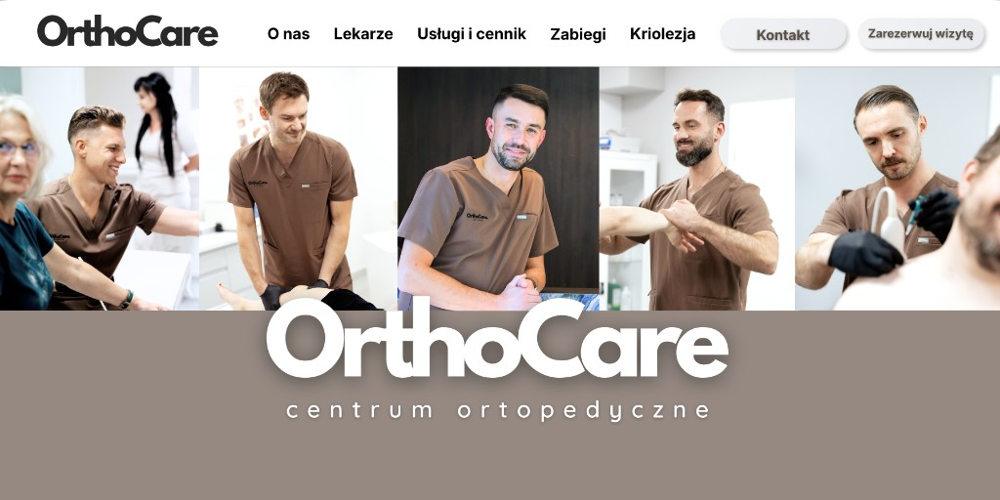

Zamroź ból. Odzyskaj wolność ruchu bez tabletek.
Nowoczesna i bezpieczna kriolezja (krioanalgezja) pod kontrolą USG. Pozbądź się przewlekłego bólu kręgosłupa i stawów w zaledwie kilkanaście minut. Ciesz się ulgą trwającą od kilku miesięcy do nawet dwóch lat.
Sprawdź, czy kwalifikujesz się do zabieguKiedy kriolezja jest ratunkiem?
Życie z przewlekłym bólem wycieńcza organizm, a ciągłe przyjmowanie silnych leków niszczy żołądek i wątrobę. Jeśli rehabilitacja nie przynosi zadowalających efektów, a ból powraca, kriolezja jest idealnym rozwiązaniem. To bezpieczna metoda dedykowana pacjentom cierpiącym na:
- • Bóle kręgosłupa (zwyrodnienia stawów międzywyrostkowych i dyskopatie)
- • Bóle stawów biodrowych i kolanowych (również u osób po wszczepieniu endoprotezy)
- • Rwa kulszowa oraz rwa barkowa
- • Neuralgie i neuropatie (bóle pooperacyjne, pourazowe, ból po przejściu półpaśca)
- • Bóle głowy pochodzenia szyjnego
Droga do życia bez bólu: Blokada testowa vs Kriolezja
Krok 1
Blokada testowa (diagnostyczna)
Co to jest: Krótki zabieg wstępny, podczas którego precyzyjnie podajemy minimalną ilość leku znieczulającego w okolice nerwu.
Cel: Potwierdzenie źródła bólu. Jeśli po blokadzie poczujesz natychmiastową ulgę (na kilka godzin), zyskujemy 100% pewności, który nerw odpowiada za Twój ból.
Efekt: Bezpieczna kwalifikacja do kriolezji — wiemy dokładnie, gdzie działać, eliminując ryzyko zabiegu „na oślep”.
Krok 2
Właściwy zabieg kriolezji
Co to jest: Celowane, czasowe wyłączenie przewodnictwa nerwu za pomocą niskiej temperatury (ok. -70°C).
Cel: Długotrwałe zablokowanie sygnałów bólowych wysyłanych do mózgu, bez uszkadzania struktury samego nerwu.
Efekt: Błyskawiczna i trwała ulga w bólu trwająca od 6 do nawet 18 miesięcy.
Małoinwazyjnie, bezpiecznie i pod pełną kontrolą

Krok 1: Komfortowe znieczulenie
Zabieg wykonujemy w warunkach ambulatoryjnych. Miejsce wkłucia jest znieczulane miejscowo — procedura jest całkowicie komfortowa i praktycznie bezbolesna.

Krok 2: Komputerowa precyzja (USG)
Lekarz wprowadza miniaturową sondę kriochirurgiczną, cały czas śledząc jej ruch na ekranie USG. Gwarantuje to milimetrową dokładność i stuprocentowe bezpieczeństwo ominięcia naczyń krwionośnych.

Krok 3: Szybki powrót do domu
Całość trwa około 15–20 minut. Od razu po zabiegu możesz wstać i opuścić przychodnię. Nie potrzebujesz hospitalizacji ani długiej rekonwalescencji — wracasz do swoich codziennych planów. Efekt niemal natychmiastowy.
Najczęściej zadawane pytania
Czy kriolezja niszczy nerwy na stałe?▼
Nie. Kriolezja jedynie czasowo „zamraża” funkcję czuciową nerwu. Z biegiem miesięcy nerw całkowicie i bezpiecznie się regeneruje, dlatego zabieg — w razie powrotu dolegliwości — można bez przeszkód powtarzać.
Jak szybko poczuję ulgę po zabiegu?▼
Większość pacjentów odczuwa wyraźne zmniejszenie lub całkowite ustąpienie bólu niemal natychmiast po zejściu z fotela zabiegowego.
Czy po zabiegu muszę brać leki przeciwbólowe?▼
Głównym celem kriolezji jest uwolnienie pacjenta od farmakoterapii. W zdecydowanej większości przypadków pacjenci mogą całkowicie odstawić doustne leki przeciwbólowe, odciążając tym samym układ pokarmowy.